jetowl_system: the four repositories in one Simulink model¶
Source
This page is rendered from MATLAB/simulink/system/README.md, the authoritative description kept next to the code in MATLAB/simulink/system/.
One model holds every device of the project and every link between them. Each device is a subsystem of MATLAB Function blocks from ../../utilities; each network is a subsystem with one packet-link block per topic and direction. Nothing passes between devices except through a network subsystem.
| Device subsystem | Repository | What runs inside |
|---|---|---|
| JetOwl FC | JetOwl_FlightControl (STM32N657) | IMU ×2 → Mahony ×2 → fusion, MT6835 ×4 → rotor speed, GNSS ×2 → frontend → CI, BMP388; RC/Jetson authority → cmd_guard → attitude (250 Hz) → rate loop → rotor speed; LoRa RX and telemetry TX; mission; micro-ROS publishers |
| Isaac ROS Jetson | Isaac_ROS-Jetbot_NanoOWL (Orin Nano) | ESKF (IMU + GNSS + baro + LPB40B LiDAR), flight mode, reference clock held by the mission, odometry, MPC, thrust/attitude map; vision bridge with the Qt mode requests; MAVLink heartbeat |
| JetOwl Vision | JetOwl_Vision (STM32N657 + IMX335) | AE/AWB loops once per frame, preview modes (cam_preview.c), preview publisher |
| Remote UAV | Isaac_ROS-Jetbot_NanoOWL/Remote_UAV (GIGA R1 + LR1121) | pilot sticks and switches, LoRa uplink TX / telemetry RX, mission staging (Accept / Start), STATUS to the phone |
| JetbotNanoOWL phone | JetbotNanoOWL (Android) | command arbiter REMOTE / DIRECT / NONE, heartbeat, mission upload |
| UAV plant | — | 4 ESC + BLDC + propeller units, 6-DOF rigid body, rotor angles for the encoders |
Communication interfaces¶

| Link (network subsystem) | Direction | Protocol | Messages, rate | One-way delay |
|---|---|---|---|---|
P.net.fc_imu (Ethernet) | FC → Jetson | micro-ROS / XRCE-DDS, UDP | /imu/data 200 Hz: t, accel FLU, gyro FLU, q ENU | 3 ms |
P.net.fc_gnss | FC → Jetson | 〃 | /gps/fix 1 Hz: lla, σ_h, σ_v, source | 3 ms |
P.net.fc_baro | FC → Jetson | 〃 | /baro/pressure 25 Hz: h, p | 3 ms |
P.net.fc_fb | FC → Jetson | 〃 | /jetowl/ctrl_feedback 50 Hz: armed, IMU, authority, guard mode, thrust | 3 ms |
P.net.fc_mission | FC → Jetson | 〃 | /jetowl/mission/geo on change: id, state, count | 3 ms |
P.net.j_sp | Jetson → FC | 〃 | /control/attitude_setpoint 50 Hz: t, q NED, thrust | 3 ms |
P.net.vis_img | Vision → Jetson | 〃, reliable, fragmented (MTU 1472) | /jetowl_vision/image_preview every T | 7 ms |
P.net.j_vis | Jetson → Vision | 〃 | /jetowl_vision/preview_mode [ver, D, enc, T] | 3 ms |
P.net.lora_ul (LoRa) | Remote → FC | LR1121 2.4 GHz SF6/BW812 CR⅘ | RC 21 B at 50 Hz, RCX 37 B (mission aux) every 5th | 8 ms |
P.net.lora_dl | FC → Remote | LR1121 921.4 MHz SF7/BW250 CR⅘ | TLM 37 B at 10 Hz | 42 ms |
P.net.usb_up (phone links) | phone → Remote | USB-C CDC, COBS + CRC-16 (or BLE) | HEARTBEAT 2 Hz, mission BEGIN/ITEM/END/CMD | 2 ms |
P.net.usb_dn | Remote → phone | 〃 | STATUS 10 Hz | 2 ms |
P.net.ws | Jetson → phone | Wi-Fi WebSocket, MAVLink | HEARTBEAT 1 Hz | 10 ms |
The delays come from the physics of each link (jetowl_sim_params, P.net), in 1 ms ticks:
- Ethernet: 2 ms for lwIP + XRCE-DDS + agent, plus the wire time
(bytes + 66)·8 / 100 Mbit/srounded up. The preview frame uses the wire time of its fragments,N(MTU + 66)·8/RwithN = ⌈(size + 70)/(MTU − 12)⌉, which is 4.9 ms for the initial mode. - LoRa: the time on air of the Semtech modem (
comm_lora_time_on_air, a port of the FC'slr1121_time_on_air_us): RCX 7191 µs → 8 ms, TLM 41 084 µs → 42 ms. - USB and WebSocket: the stack latencies are placeholders to be measured. The FC's
/jetowl/link/ponground trip measures the Ethernet value the same way (docs/MICROROS_ETHERNET.md§11).
A link is a 1-tick transmit buffer (Unit Delay on the packet and on its send flag) followed by comm_net_link with delay_steps = total − 1. The buffer breaks the loops between devices; without it Simulink reports an algebraic loop, because a MATLAB Function block is direct feedthrough. The receiver holds the newest packet and sees a one-tick fresh pulse on arrival. A receiver at a slower rate detects a new message by the change of its stamp (Detect Change at its own rate).
The model¶

| Subsystem | Diagram |
|---|---|
| JetOwl FC | 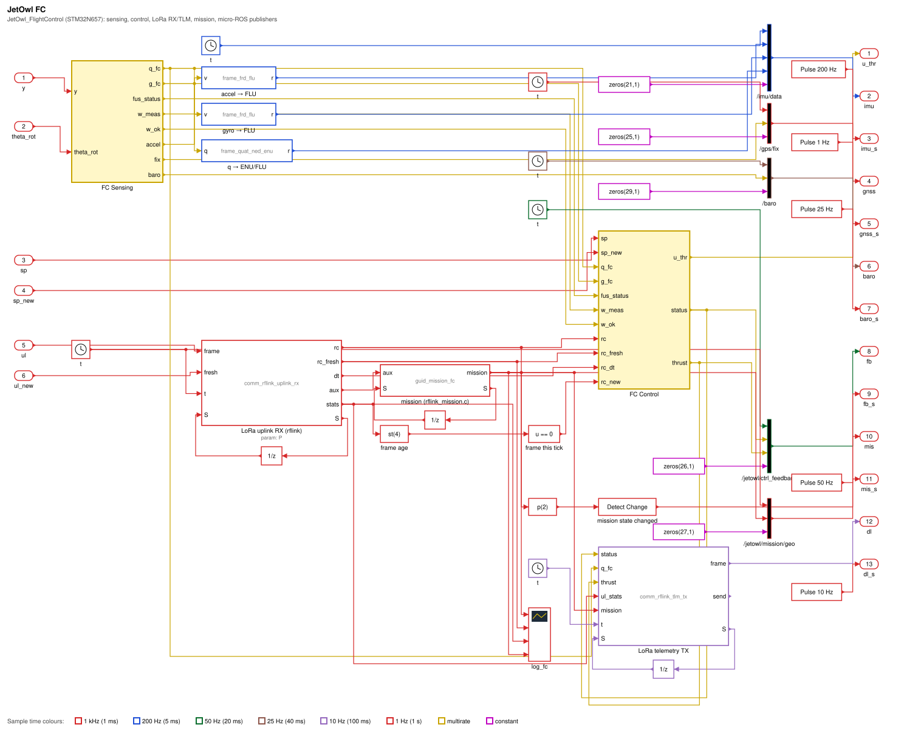 |
| FC Sensing | 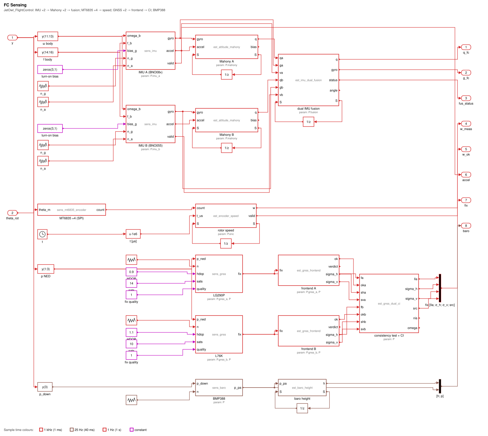 |
| FC Control | 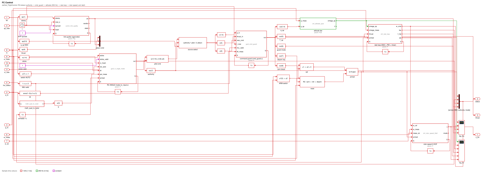 |
| Isaac ROS Jetson | 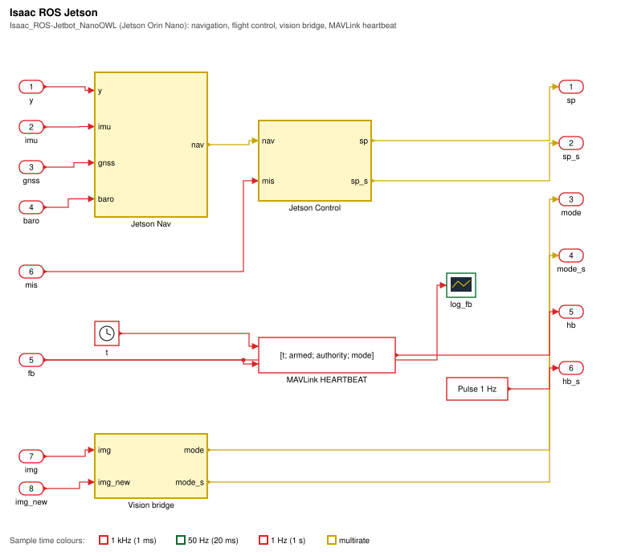 |
| Jetson Nav | 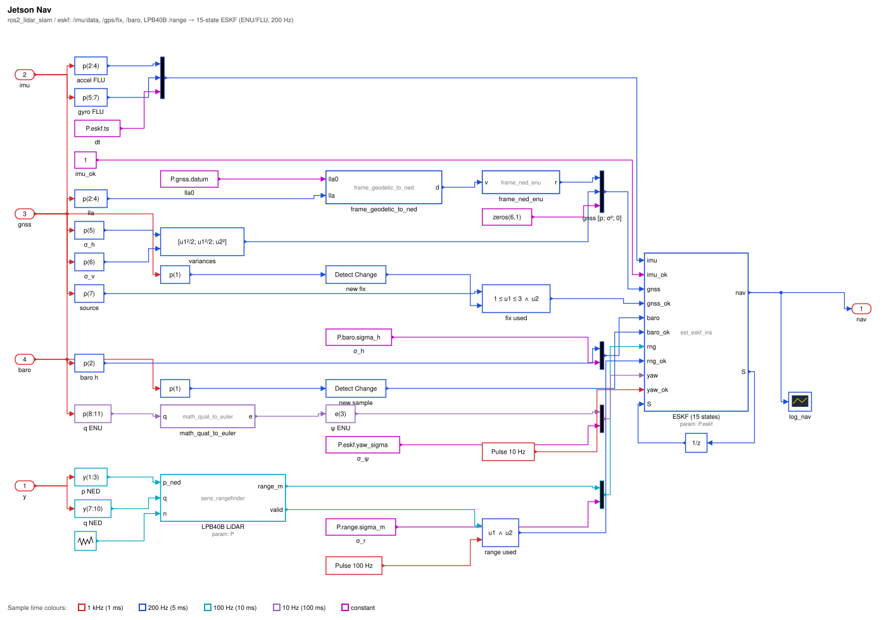 |
| Jetson Control | 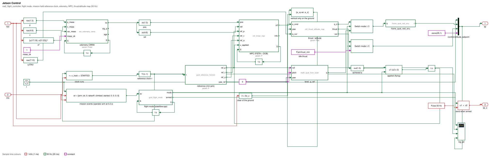 |
| Vision bridge | 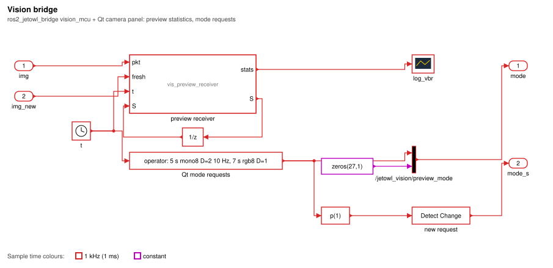 |
| JetOwl Vision | 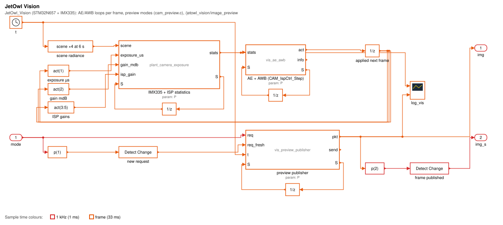 |
| Remote UAV | 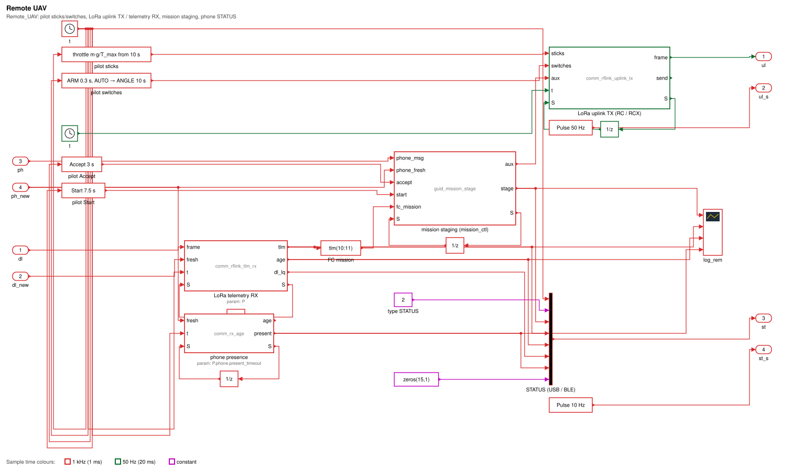 |
| JetbotNanoOWL phone | 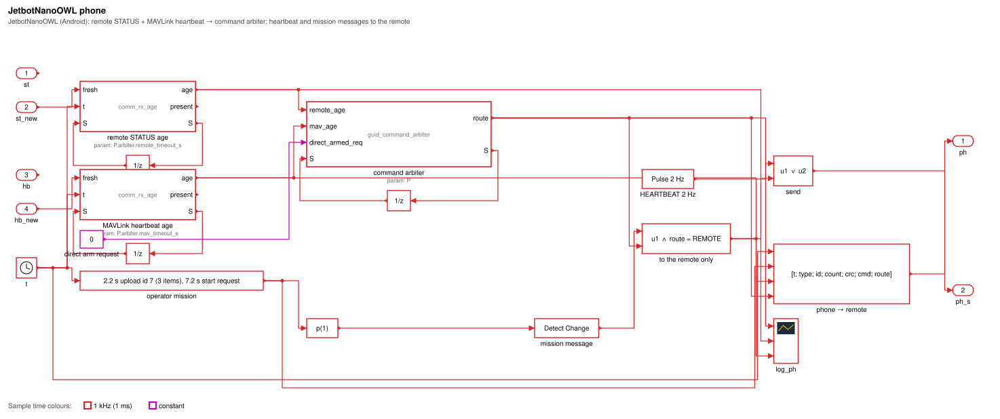 |
| Ethernet (micro-ROS) | 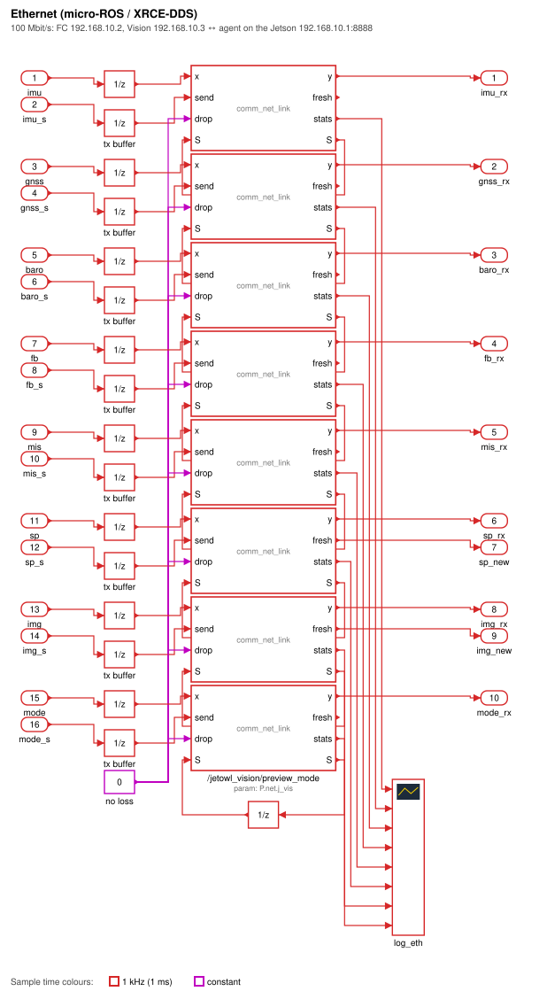 |
| LoRa LR1121 | 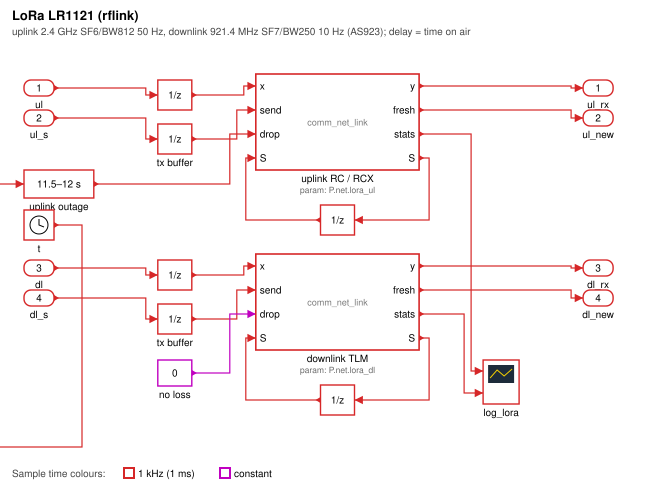 |
| Phone links | 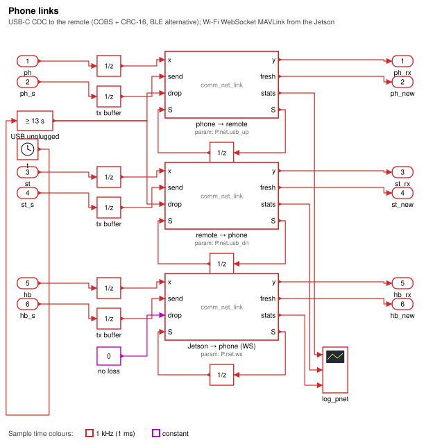 |
| UAV plant | 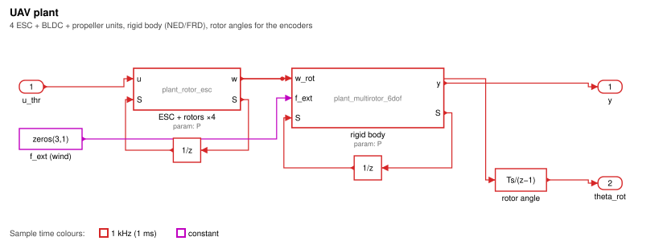 |


Sample times: base step 1 ms; 250 Hz attitude; 200 Hz IMU and ESKF; 100 Hz LiDAR; 50 Hz outer loop, RC uplink, feedback; 33 ms camera frame; 25 Hz baro; 10 Hz telemetry, STATUS, heartbeat yaw; 1 Hz GNSS and MAVLink heartbeat. The solver is fixed-step discrete and single-tasking. A block runs at its own rate and holds its output in between, so no Rate Transition block is needed.
Scenario (15 s)¶
| t [s] | Who | Event | What it exercises |
|---|---|---|---|
| 0.2 | Jetson operator | arm the flight mode → ARMED_IDLE, idle thrust sent at 50 Hz | Ethernet setpoints, cmd_guard arm check |
| 0.3 | pilot | ARM switch (mode AUTO) | LoRa uplink, arm latch, authority = Jetson |
| 2.2 | phone | mission upload, id 7, 3 items | USB, remote STAGED |
| 3.0 | pilot | Accept | RCX aux → FC READY → telemetry → ON BOARD |
| 3.0 | Jetson | TAKEOFF to 2 m after three GNSS fixes (jetowl_system_params) | MPC → thrust/attitude → FC loops → plant |
| 5.0 | Qt operator | preview mono8, D = 2, T = 100 ms | accepted |
| 6.75 | Jetson | reference clock holds at the first waypoint (P.traj.t_hold) | mission gating |
| 7.0 | Qt operator | preview rgb8, D = 1 | rejected (−2: 921 600 B > 76 800 B), old mode kept |
| 7.2 | phone | start request | remote START? (asks the pilot) |
| 7.5 | pilot | Start | FC STARTED → /jetowl/mission/geo → WAYPOINT_FOLLOW, clock resumes |
| 10.0 | pilot | MODE → ANGLE, throttle m g / T_max | authority = pilot |
| 11.5–12.0 | — | LoRa uplink outage | RC timeout → FAILSAFE (bounded descent) → ACTIVE |
| 13.0 | phone | USB unplugged | presence lost; arbiter NONE at 14.4 s (last STATUS 12.9 s + 1.5 s) |
Results (test_system_model_suite, GNSS seed 1, Octave 8.4)¶
| Interface | Expected | Measured |
|---|---|---|
| Ethernet counts in 15 s | /imu/data 3000, /gps/fix 15, /baro 375, feedback 750, setpoint 739, mode requests 2, mission 2 | identical, no loss |
| Ethernet delays | setpoint 3 ms, preview 7 ms | 3 ms, 7 ms |
| LoRa | 750 uplink frames, 25 lost in the 0.5 s outage, 150 TLM; 8 ms / 42 ms (time on air) | identical |
| Phone | STATUS 2 ms, MAVLink 10 ms; NONE 1.5 s after the last STATUS | 2 ms, 10 ms, NONE at 14.40 s |
| Mission | STAGED → UPLOADING → ON BOARD → START? → STARTED; WAYPOINT_FOLLOW after Start | WAYPOINT_FOLLOW at 7.60 s; τ held at 6.76 s |
| Preview | mono8 D = 2 at 1/(⌈T/T_f⌉ T_f) = 7.58 Hz; rgb8 D = 1 rejected (−2) | 7.45 Hz (EWMA), 1 reject, 0 lost |
| Authority | Jetson in AUTO, pilot after 10 s; FAILSAFE ≤ RC timeout + frame + time on air | FAILSAFE at 11.588 s (bound 11.629 s), ACTIVE again after 12 s |
| Flight | vertical < 0.3 m; horizontal at the end of AUTO < 3√2 σ_h = 3.24 m | 0.048 m; 0.84 m (largest 3.35 m right after the climb, while the ESKF still converges on the 1 Hz fixes) |
| Estimator | horizontal NEES ≤ χ²₂(99.7 %) for ≥ 95 % of samples; NIS in 99 % bands | 100 %; GNSS 3.06 (3 dof), LiDAR 0.95; baro 1.89 (see Limits) |
Running it¶
% MATLAB + Simulink: build jetowl_system.slx from the data and simulate it
addpath(genpath('MATLAB/utilities')); addpath('MATLAB/simulink/system');
jetowl_build_system_model(); % creates and opens jetowl_system.slx
sim('jetowl_system');
% MATLAB or GNU Octave, no Simulink: execute the same graph
L = jetowl_system_sim(15); % logs of the 14 Scope blocks, about 5 min in Octave
plot(L.log_truth.t, -L.log_truth.u(3, :)); % altitude
R = jetowl_build_system_model(struct('dry_run', true)); % check the build plan
jetowl_system_sim executes the semantics described above. Each step k runs the blocks whose period divides k·T_s, in the topological order of the graph. Unit Delays and forward-Euler integrators output their state, so they break that order. Any other cycle is an algebraic loop, and the generator stops on it.
The test is test/tests/test_system_model_suite.m. It checks every interface against the number it must produce:
- message counts, which equal rate × time;
- measured one-way delays, which equal
P.net.<link>.total_steps; - the 25 frames lost to the 0.5 s outage;
- the mission chain, the preview accept/reject codes and the preview rate;
- authority and failsafe timing;
- the flight specification of the noisy SIL mission.
Files¶
| File | Content |
|---|---|
jetowl_system_spec.py | the model: every subsystem drawn as a diagram. It writes diagrams/*.svg and jetowl_system_data.m |
jetowl_system_data.m | generated: blocks (kind, function, parameter expressions, sample time, position), lines, execution order |
jetowl_build_system_model.m | builds jetowl_system.slx with add_block/add_line. MATLAB Function blocks get a wrapper script with P as Parameter data |
jetowl_system_sim.m | runs the same graph without Simulink |
diagrams/ | the interface map and one Simulink-style diagram per system |
Regenerate after editing the spec:
Control design¶
This model adds no control law. Every controller, estimator and filter is a block of utilities/ with its derivation and reference in its header. The SIL suite already verifies them against their specifications (see test/README.md). The model adds only logic:
- Command source select (FC): the authority of
guid_rc_angle_mode(a port ofrc_input.c). 1 = pilot takes the stick setpoint, submitted on each new frame. 2 = Jetson takes the setpoint that passed the age/order check. 0 = no source. - Arm latch (FC): set by ARM ∧ RC fresh ∧ arm check OK. Reset by RC fresh ∧ (¬ARM ∨ KILL), or by the guard's disarm request. Losing RC does not disarm: the guard's bounded failsafe handles it.
- Reference clock (Jetson): τ advances by
T_sper step whileτ < P.traj.t_holdor the mission is STARTED.P.traj.t_holdis the end of the first min-jerk segment, by the same duration rule asguid_min_jerk. - Applied acceleration to the MPC: zero while not flying (mode < TAKEOFF), so the disturbance observer does not integrate the ground reaction. This replaces the state reset the SIL script does in code.
- Vertical only on the ground (Jetson): the MPC's horizontal acceleration passes to the thrust/attitude map only once the estimate is clear of the ground,
ẑ > 3σ_z(ESKF σ, a one-sided 99.87 % test). Witha_xy = 0the same map gives a level attitude andT = m(g + a_z). Without this gate, the model showed lift-off 1.2 s late. On the ground, a tilted setpoint cannot be followed, so the FC's ESO estimates the contact torque as a disturbance (f̂ ≈ −35), saturates the torque demand, and the torque-priority mixer starves the collective thrust. With the gate, lift-off follows TAKEOFF by 0.53 s. - Takeoff time:
jetowl_system_paramsstarts TAKEOFF after three GNSS fixes (t = 3 s), once the ESKF's horizontal σ has left its 2 m initial value.
Limits¶
jetowl_system.slxis built by the script in MATLAB. The repository holds the generator, the data and the Octave run of the same graph, not a saved.slx.- The USB, WebSocket and Ethernet stack latencies are placeholders until they are measured.
- The preview link delay uses the wire time of the initial mode (D = 4, rgb8). The mono8 D = 2 mode needs 6.5 ms on the wire, one tick more than modelled.
- The horizontal accuracy is that of the 1 Hz autonomous GNSS (σ_h ≈ 0.76 m per axis), as in the SIL. The pilot's throttle in ANGLE mode is open loop on altitude, as on the real remote.
est_baro_heighttakes its reference from the first pressure sample. That sample's noise (σ_h = 0.1 m) stays as a constant height bias, which the LiDAR exposes once airborne: the baro NIS mean is 1.89, against an expected1 + (b/σ_h)²withb ≈ σ_h. Averaging the reference over the samples taken on the ground before arming would remove it. That is a change to the block (and to the FC'snav_dr.c, if it does the same), not to this model.- The vision preview rate in the model is quantised to the 33 ms camera step of the model.